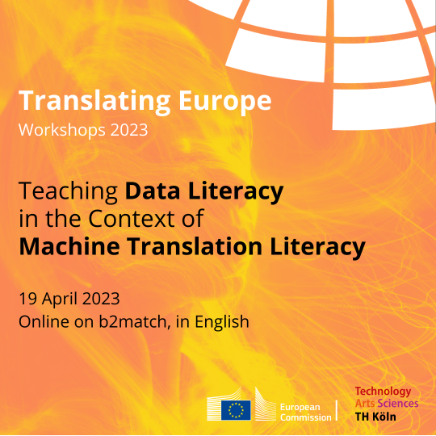

Academic Outcomes
We presented the theoretical underpinnings and the practical learning outcomes of DataLitMT in a range of academic articles and at various academic conferences. These academic outcomes are listed below.
Publications
Hackenbuchner, Janiça/Krüger, Ralph (forthcoming): DataLitMT – Teaching data literacy in the context of machine translation literacy. In: Proceedings of the 24th Annual Conference of the European Association for Machine Translation.
Krüger, Ralph/Hackenbuchner, Janiça (submitted for publication): A competence matrix for machine translation-oriented data literacy teaching. (article in paid journal)
Krüger, Ralph (2023): Some reflections on the interface between professional machine translation literacy and data literacy. In: Journal of Data Mining and Digital Humanities, Special Issue: Towards a Robotics of Translation, 1–11. https://doi.org/10.46298/jdmdh.9045.
Krüger, Ralph (2022): Integrating professional machine translation literacy and data literacy. In: Lebende Sprachen 67(2), 247–282. https://doi.org/10.1515/les-2022-1022. (article in paid journal)
Krüger, Ralph/Hackenbuchner, Janiça (2022): Outline of a didactic framework for combined data literacy and machine translation literacy teaching. Current Trends in Translation Teaching and Learning E, 375–432. https://doi.org/10.51287/cttl202211.
Presentations
DataLitMT – Teaching Data Literacy in the Context of Machine Translation Literacy, presentation at The 24th Annual Conference of The European Association for Machine Translation at Tampere University in June 2023, by Ralph Krüger and Janiça Hackenbuchner.
DataLitMT – Teaching Data Literacy in the Context of Machine Translation Literacy, presentation at the EMT Network Meeting “Translation Skills: Today’s Challenges, Tomorrow’s Needs” on 28 March 2023, by Ralph Krüger and Janiça Hackenbuchner.
Neural Machine Translation, MT Literacy and Data Literacy for Specialised Translation, presentation at the NeuroViz/SPECTRANS-Event “Specialised Corpora and Neural Translation“ at the Université de Paris on 16 December 2022, by Ralph Krüger, Janiça Hackenbuchner and Andre Busch.
Das DataLitMT-Projekt – eine Verzahnung von Data Literacy and Machine Translation Literacy in der technologiebezogenen Translationslehre, presentation at the annual conference of the Gesellschaft für Angewandte Linguistik 2022 at the Julius-Maximilians-Universität Würzburg on 30 September 2022, by Ralph Krüger and Janiça Hackenbuchner.
The DataLitMT Project – Teaching Data Literacy in the Context of Machine Translation Literacy, presentation at ”Neurotrad2022 – Conference on Teaching Translation and Interpreting in the Age of Neural Machine Translation“ at the Université libre de Bruxelles on 29 September 2022, by Ralph Krüger and Janiça Hackenbuchner.
Workshops
Together with the Directorate-General for Translation of the European Commission, we organised a Translating Europe Workshop, in which we presented the outcomes of the DataLitMT project. The recording of the theoretical inputs can be watched here, and the recording of the practical sessions can be watched here.
Find more information on the workshop on our workshop website.
